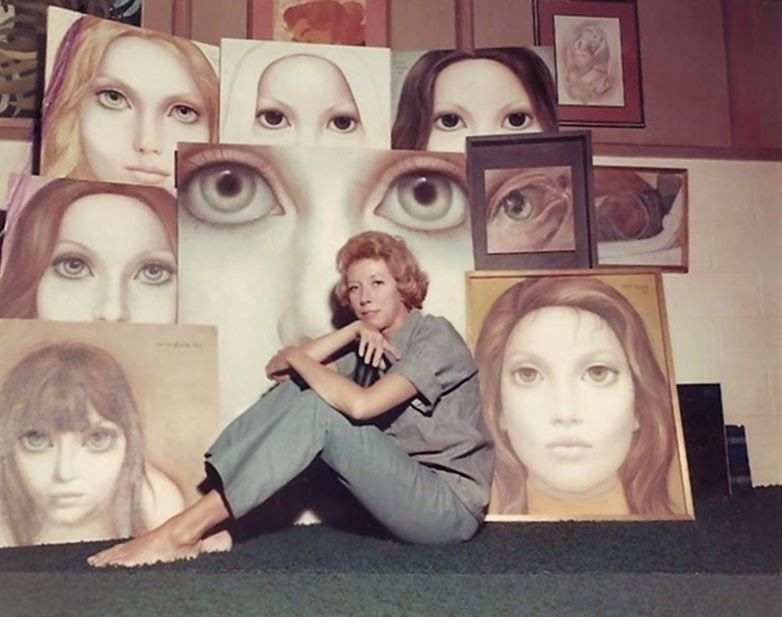
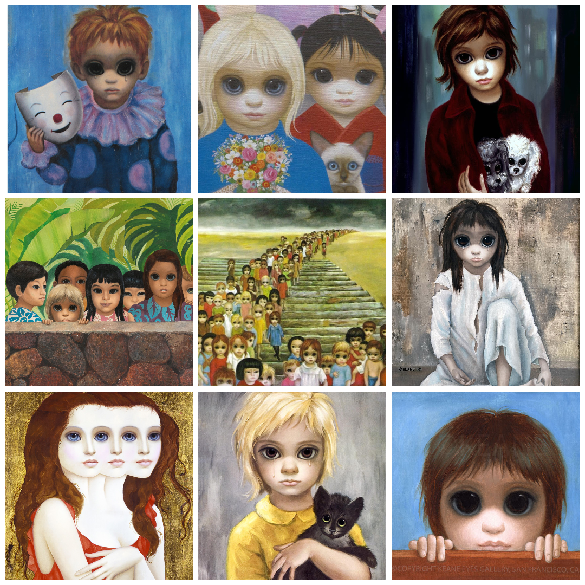

Nimi: Margaret Keane
Sünnikuupäev: 15.september 1927
Surmakuupäev: 26.juuni 2022


Kaua ta kunstnikuna tegeles?
Üle 60 aasta.
Mis stiile valdas?
- Suured silmad
- Popkunst
- Lowbrow/Pop sürrealism
- Sürrealism
Minupoolne ülevaade
Oskab maalida, väga hea kunstnik.